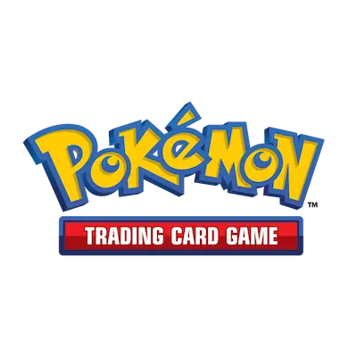
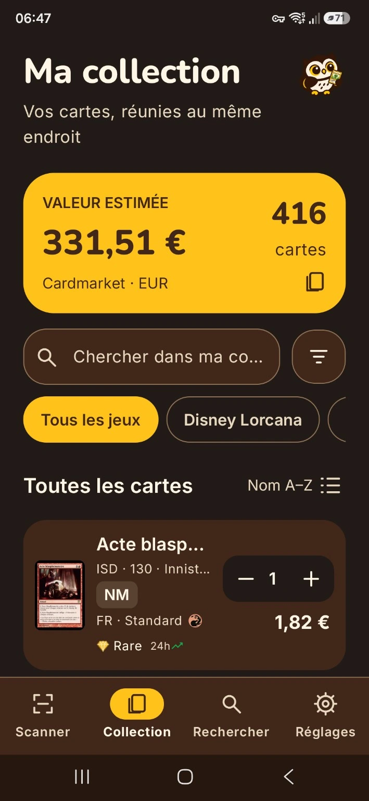

A collection that makes senseTrack each printing, language, finish and condition. Keep quantities, notes and your own prices in one place.
For the love of collecting
A home for every card.
The thrill of a new find. The joy of a complete set. Keep it all together with Zukan, your self-hosted trading card collection manager.
Web interface and Android app available in English, French, German and Spanish.
Self-hosted · Web + Android · Your collection, your server
Different worlds. One collection.
6 games, with room to grow
Less sorting. More collecting.
Know what you have.
Find what’s next.
From the first card to the overflowing binder, give every detail its place.
The bigger pictureFollow market prices and your collection’s value over time, with Cardmarket, CardNexus and TCGplayer.
Explore beyond your bindersBrowse game catalogs, compare printings and find card images in the languages available from each source.

From your hands to your collection
Less typing.
More discovering.
Point your Android camera at a card. Zukan reads the text, finds matching cards and lets you choose the right printing before adding it to your collection.
- 1Scan a card or search by name.
- 2Check the printing, language and condition.
- 3Add copies. Remove copies. Undo if needed.
Companion app · Android 8.0 or later · Connects to your Zukan server
Your little corner of the hobby
Your cards.
Your data.
Your server.
Make yourself at home
Run Zukan on your own infrastructure with Docker Compose. Your database and cached images stay on your server.
Bring your collection along
Import and export CSV files. Keep your details, move your data and back up what matters.
A space for each collector
Multiple accounts, local sign-in or OpenID Connect. Use the web interface and Android companion with the same server.
Make room for your collection
Your next chapter starts here.
Find the installation guides in the Zukan wiki and the Android builds in the GitHub releases.
A personal project. An open invitation.
Zukan was built with the help of AI agents to meet a personal need that would otherwise have remained unfulfilled. That choice is embraced openly, with room to learn. Experienced developers are warmly welcome to help improve the project: constructive criticism, thoughtful reviews and contributions all have a place here.
Help Zukan grow